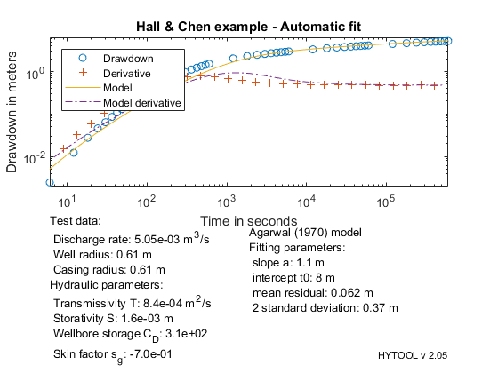

Agarwal et al. solution in the aquifer
This is a demo of the interpretation of an intereference pumping test with the Agarwal (1970) solution (skin + well capacity).
MIT License Copyright (c) 2017 Philippe Renard - University of Neuchâtel (CHYN)
Contents
Load the data
The data for this example has been typed from: HALL P., CHEN J., 1996. Water well and aquifer test analysis. Water Resources Publications, LLC, 412 pp. The test data are published on page 171-174. and interpreted with the Papadopulos-Cooper model with 2 differents storativities.
Let us first load the data.
[t,s]=ldf('pca_ds1.dat');
| HYTOOL Demo |
Interpretation
We can then fit the model. It happens that it is not possible to get a good automatic fit or manual fit to the data with the Agarwal model. We keep only the manual fit which is based on the late time data for the transmissivity. We find: T = 8.8 e-4 m2/s, S = 6.7 e-4, sigma=-0.7
p0=aga_gss(t,s); p=fit('aga',p0,t,s); p=[1.1,8,-0.7]; aga_rpt(p,t,s,'Hall & Chen example - Automatic fit');
Norm of Norm of
Iteration SSE Gradient Step
-----------------------------------------------------------
0 2.96859
1 0.809635 10.643 2.56031
2 0.602575 2.57687 0.305913
3 0.579122 0.928909 0.0542129
4 0.564727 1.94591 0.0431654
5 0.464337 0.347985 0.317316
6 0.423636 18.5125 1.43979
7 0.218587 8.62133 1.62193
8 0.169782 0.781712 0.648164
9 0.169167 0.01784 0.111732
10 0.169151 0.0771058 0.0434526
11 0.169146 0.00414206 0.00271228
12 0.169146 0.00627126 0.00435664
13 0.169146 0.0145658 0.000803919
14 0.169145 0.00720951 0.000235349
15 0.169145 0.010657 0.000577208
16 0.169145 0.00599888 0.000286357
17 0.169145 0.00672841 9.18217e-05
18 0.169145 0.013221 3.97479e-06
19 0.169145 0.0037887 3.73614e-08
Iterations terminated: relative norm of the current step is less than OPTIONS.TolX
 For comparison, the results found by Hall and Chen using the Papadopulos-Cooper (1967) model using two different storativities is : alpha = 0.002 which is equivalent to Cd = 1000 T = 7.97e-04 m2/s S1 = 3.49e-03 S2 = 2.00e-03